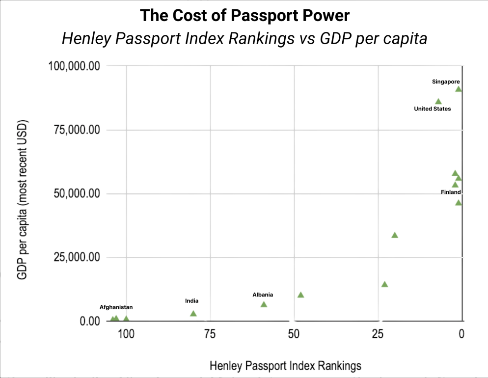

Policy · Data
Every passport carries an invisible currency. Some open borders; others open questions. It is a quiet reflection of global order: a small, rectangular summary of how the world values trust, wealth, and belonging.
When you plot a country’s GDP per capita against its Henley Passport Index ranking, the trend is impossible to ignore: *money moves and so do the people who have it.*

Data: Henley Passport Index 2024, World Bank GDP per capita (USD)
High-income nations such as Singapore, the United States, and Finland cluster at the top right of the chart, where prosperity meets unrestricted access. These countries aren’t just economically powerful — they’re politically trusted. Their citizens are less likely to overstay visas, more likely to invest abroad, and typically come from states with stable governance and strong diplomatic relationships.
In contrast, nations like India, Albania, and Afghanistan occupy the lower-left end, where economic constraints overlap with geopolitical isolation. Their weaker passport scores are not merely economic reflections but also diplomatic consequences, shaped by security concerns, migration fears, and histories of uneven global power.
This correlation between income and mobility reveals a deeper inequality in the international system: freedom of movement has become an economic privilege.
The ability to cross borders without restriction mirrors patterns of trade, capital flow, and even political trust. In other words, the same countries that dominate global markets also dominate the skies.
But outliers remind us that diplomacy can sometimes outpace wealth. The rise of Singapore’s passport — now ranked first globally, reflects decades of strategic neutrality, open trade, and soft-power credibility far beyond its size. In a similar way, the United Arab Emirates (not shown here) leveraged diplomatic deals rather than GDP alone to climb the mobility ladder.
Still, the overall picture is stark: the higher your nation’s income, the fewer borders you face.
A passport, then, isn’t just a document of citizenship but an index of how the world perceives your country’s reliability and economic worth.
A strong passport is a reflection of trust, stability, and history and it reminds us that in a globalized world, freedom of movement still has a price tag. Mobility, like wealth, compounds — some inherit open skies, others inherit walls.